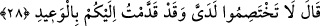

“didişmeyin” ifadesi delâlet eder. “Rabbimiz ben onu yoldan çıkarmadım” yani ben
onu yoldan çıkan kişi yapmadım ve onu başkaldırıya da sürüklemedim. O kendisi isyan
konusunda sınırı aştı. “Fakat” bizzat kendisi “derin bir sapıklık içinde” haktan uzak,
dönülemeyen uzunlukta olan bir sapıklık içinde. Ben ona “benim sizin üzerinizde bir
otoritem yoktur. Sadece ben sizi dâvet ettim siz de icabet ettiniz” (İbrâhim, 14/22)
âyetinde de olduğu gibi yoldan çıkma ve oraya dâvet etme husûsunda kusursuz bir
şekilde yardımcı oldum. Şeytanın kandırması görüşü zayıf, kötülüğe meyyal, hak yoldan
çıkmış ve bunun seviyelerce altında olan kişilere etki eder.
Hadiste “Ben bir rasulüm. Bende hidâyet namına bir şey yoktur. Eğer bende hidâyet
namına bir şey olsaydı yeryüzündeki herkes îman etmiş olurdu. Şeytan da böyledir.
Onun elinde de saptırma namına bir şey yoktur. Eğer onda saptırma namına bir şey
olsaydı yeryüzündeki herkes yoldan sapardı. Ama Allah istediğini yoldan saptırır;
istediğine hidâyet verir” buyurulmuştur.
28. O esnada (Allah) buyurur: Huzurumda çekişmeyin! Ben size daha önce uyarı
göndermiştim!
Sanki “Allah âdemoğlu ve dünyada kendisine bağlanan şeytana ne dedi?” denilmiş de
Allah şöyle buyurmuştur: “Huzurumda” hesap ve cezâ yerinde “didişmeyin.” Zira
bunda bir yarar yoktur. Bazıları bu hitabın kâfirler hakkında olduğunu söylemiştir. Fakat
“Ardından siz kıyamet günü Rabbinizin huzurunda didişirsiniz” (ez-Zümer, 39/31)
buyruğu mü’min ve zalimler arasındaki çekişme ile ilgilidir. Çünkü o yerde, yani
kıyamet gününde müminlerle zâlimler arasında bir çekişme olacağı dini kaynaklarda
ifade edilmiştir. “Bu, cehennem ehlinin çekişmesi haktır” (Sad, 38/64) buyruğu ise
cehennem ehli hakkındadır. Böylece âyetler arasındaki uyum da ortaya çıktı. “Ben size
daha önce uyarıcı gönderdim,” kitaplarım ve elçilerimin dili vâsıtasıyla size kesb ve
teklif yurdunda azgınlıklara karşı uyarıcı gönderdim. Size bana karşı ileri
sürebileceğiniz bir hüccet/delil bırakmadım. İçinde bulunduğunuz durumdan bâtıl sebep
ve mazeretler göstererek kurtulmayı istemeyin. Siz de biliyorsunuz ki İblis’e
“cehennemi sen ve sana uyanların tamamı ile dolduracağım” (Sad, 38/85) diyerek
sizlere daha önceden uyarıcı gönderdim. Doğruluktan yüz çevirerek ona uydunuz. Bu
sebeple bu vakitte çekişmenin bir mânâsı yok. Hal cümlesi şeklindeki yorum doğru
olsun diye mânâ bu şekilde takdir edildi. Zira halin, sahibine zaman açısında mukarin
olması gerekir. Fakat dünyada uyarıcının gönderilmesi ile âhiretteki çekişmede bir
mukarenet yoktur.